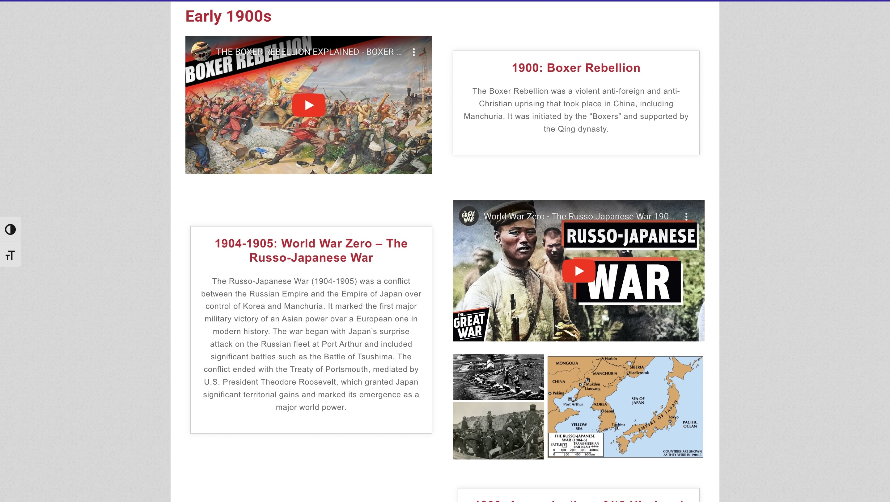
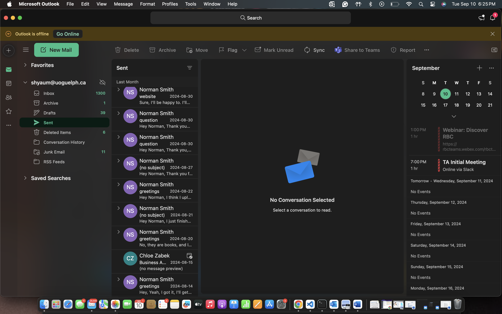

Co-op Experience Timeline
Three meaningful internships spanning web development, systems operations, and enterprise automation
Work-Term Journey
My co-op experience spans from web content management to enterprise mainframe operations, demonstrating growth across technical domains and professional environments.
University of Guelph
First co-op experience managing web content, page layouts, and department communications for the History Department.
- ▸ Managed website content updates and responsive design
- ▸ Collaborated with faculty and stakeholders on accessibility
- ▸ Maintained production site reliability and performance
- ▸ Delivered polished, professional web pages

History Department web presence

Collaborating with faculty through email
RBC Mainframe Tech Systems Analyst
Second co-op focusing on operational support, monitoring, and documentation in a critical enterprise mainframe environment processing billions in daily transactions.
- ▸ Monitored batch processes and job scheduling
- ▸ Created comprehensive support documentation
- ▸ Coordinated with delivery teams on schedule reliability
- ▸ Improved production visibility and incident response

Commuting to RBC Toronto office

First day at RBC — LinkedIn announcement
RBC Mainframe Developer
Third co-op emphasizing automation engineering, tooling development, and release management to improve mainframe deployment confidence and reduce manual operations.
- ▸ Built automation tools to streamline delivery workflows
- ▸ Improved release readiness through testing frameworks
- ▸ Enabled faster troubleshooting for production changes
- ▸ Documented systems for knowledge transfer

View from RBC Toronto office

Virtual team meeting during Winter 2026 term
Skills & Technologies
Web Development
- ▸ HTML, CSS, JavaScript
- ▸ Responsive Web Design
- ▸ Content Management Systems
- ▸ Web Accessibility Standards
Enterprise Systems
- ▸ Mainframe Operations
- ▸ Batch Job Processing
- ▸ System Monitoring
- ▸ Performance Tuning
Automation & DevOps
- ▸ Automation Scripting
- ▸ Release Management
- ▸ CI/CD Principles
- ▸ Git Version Control
Professional Skills
- ▸ Technical Documentation
- ▸ Team Collaboration
- ▸ Problem Solving
- ▸ Stakeholder Communication
Key Outcomes & Achievements
Production Impact
Supported systems managing millions of daily financial transactions with 99.9%+ uptime requirements, demonstrating reliability and attention to detail.
Technical Growth
Advanced from web-based content management to enterprise-scale mainframe engineering, expanding systems thinking and architectural understanding.
Automation Contributions
Developed tools that reduced manual delivery work, improved team efficiency, and enhanced deployment confidence across release cycles.
Documentation Excellence
Created comprehensive technical documentation that enabled faster onboarding, improved knowledge transfer, and supported continuous improvement.
Professional Reflection
These three co-op terms provided invaluable insights into professional software development and systems engineering. The progression from web development to enterprise mainframe operations revealed the breadth of career possibilities in computer science.
Moving between roles taught me the importance of clear communication, thorough documentation, and understanding how individual contributions fit into larger organizational systems. Working on mission-critical infrastructure instilled a deep appreciation for reliability, security, and the human impact of technology decisions.
Most importantly, I learned that great engineering is not just about writing code—it's about understanding business needs, supporting teammates, and creating solutions that make meaningful differences.